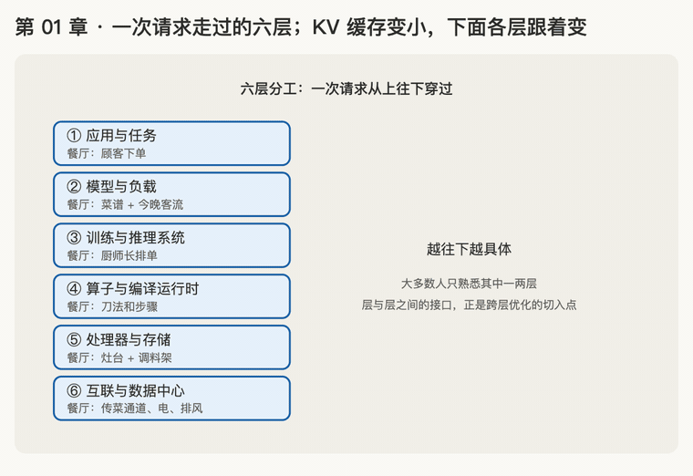
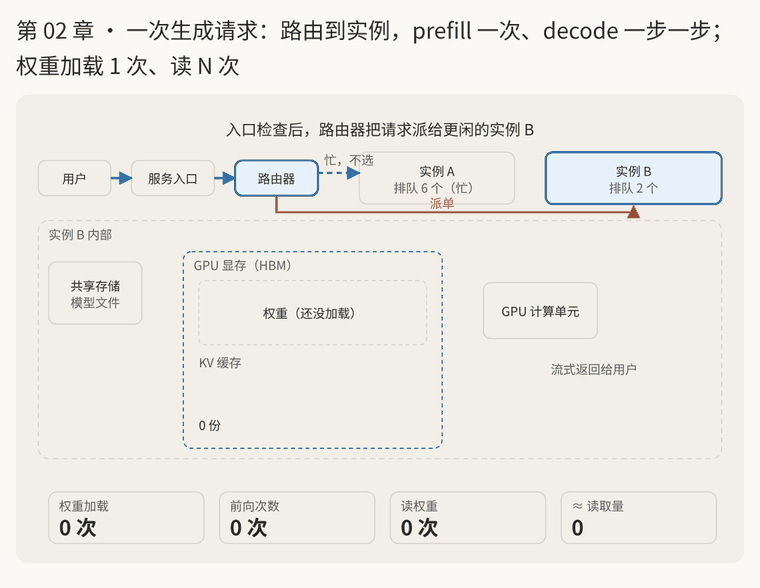
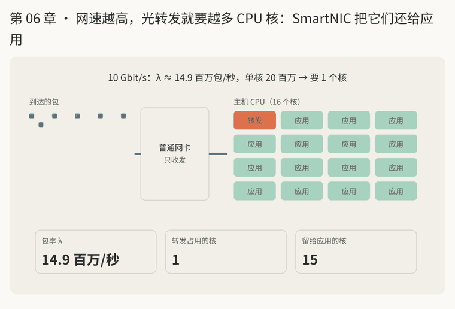

从约束推导 AI Infra · 讲义目录
30 / 67 章已写（覆盖 AII 第 1–5 章）· 31 个动画（GIF + 可交互页面）· 104 张静态图 · 118 张复习卡片 · 主线《深入理解 AI Infra》（AII）12 章，AISPE 配读
这本书讲什么
从一个"帮我找代码里的 bug"的请求讲起：它在系统里穿过哪几层、要存多少、读多少、算多少、在卡之间传多少，最后在哪块硬件上等。之后沿原书顺序，从模型架构、负载、单卡加速器和算子，一路讲到超节点、数据中心网络、推理与训练系统、资源调度和端边云。
- 适合谁：会一点 Transformer（知道 q、k、v 和 attention），对 GPU 和分布式系统没有基础也可以；用到的硬件、数学和其他书的概念，在那一章现场补，或链接到对应的书。
- 读完能做什么：拿到一个（模型、请求负载、硬件）组合，先用数量级估算定下显存、带宽、通信和卡数，再判断实测离物理极限差在哪一项（study-plan 的目标，对应里程碑 AI-M0–M11）。
- 怎么读：按章顺序读。每章先看讲解和动画，再自己做练习，最后用复习卡片隔几天考自己。
全书反复回答五个问题：搬什么、搬多少、搬几次、经过哪里、谁在等待；主线是原书的一句话：数据搬移塑造了 AI Infra 的架构。
讲解的特点
- 一次一小步：每个概念按"白话类比 → 公式（每个符号说清楚怎么读）→ 小数字亲手算一遍"讲。
- 先算极限，再看差距：每个估算都先用峰值算力、带宽、容量算出下界，再和原书实测对比，分清差距来自模型漏项还是系统开销。
- 关键机制都有图和动画：结构和数据流画静态图，数字之间的关系画图表，要拖参数才看得出规律的做成可交互动画（batch、tile 边长、链路速率……）。
- 对照原文：讲到原文的地方标本地行号（如 AII §1.3 L274），数字都能在原书或它的计算脚本里查到；编的数会写明"编的"。
- 保留真实的学习过程：练习与作答记录里是学习时的原话、对错和点评。
- 术语不设门槛：缩写第一次出现就给英文全称并逐词解释，全书缩写见 缩写与术语表。
- 每章都有代码对照：
solutions/chapter-code/一章一个纯 Python 模块，配测试核对讲义里的数字和一本 notebook；只算讲过的例子，不提前给练习答案。 - 每章收尾有口诀：全部口诀汇总在本页末尾。
示例动画
 第 01 章 · 六层：一次请求从上往下穿过六层；KV 缓存像便签越积越厚 讲义 · ▶ 交互 |
 第 02 章 · 请求处理过程：路由到实例，prefill 一次、decode 一步步；权重加载 1 次、读 N 次 讲义 · ▶ 交互 |
 第 03 章 · 分块：一个数从显存读一次，在近处被用 t 次 讲义 · ▶ 交互 |
 第 04 章 · Amdahl 定律：只加速一部分，整体最多快 1/(1-f) 讲义 · ▶ 交互 |
 第 05 章 · 批内复用：读权重不变、计算随 batch 增长，转折点 B* ≈ 148 讲义 · ▶ 交互 |
 第 06 章 · SmartNIC：网速越高，光转发要越多 CPU 核 讲义 · ▶ 交互 |
全部动画和本地打开方法见 animations/README.md。
其他入口
- 复习卡片：../review.md（说"复习"时按间隔挑到期的卡片）。
- 缩写与术语表：appendix-glossary.md。
- 代码对照：
solutions/chapter-code/（每章模块、测试和 notebook）。 - 学习计划与里程碑：../study-plan.md（阶段 A–F、AI-M0–M11、AI-G1–G3）。
- 补充资料（对话里提前问到、属于后面章节的内容，讲到对应章时再并入正文）：
- TP、PP、CP：一个模型沿三个方向切给多张卡（AII §6.1.4、§6.2.2–§6.2.5；配动画）→ 讲到第 32、33 章时并入。
- 原文：
materials/ai-infra-book/manuscripts/（上游 clone）。行号以上游3bdcb4fc为准，git pull后可能移动。
全流程总览
一次推理请求 一次训练任务
│ │
第 1 部分 六层、请求处理过程、数量级、估算方法（01–06） ◀── 方法：先算极限，再看差距
│ │
第 2 部分 模型架构：张量、KV 表示、MoE、全模型账（07–13） │
第 3 部分 负载：请求分布、Agent、多模态、训练与 RL、预算（14–18）
│ │
第 4 部分 单卡加速器：计算单元、存储层次、互联、选型（19–24）
第 5 部分 算子与运行时：分块、融合、编译器、CUDA Graph（25–30）
│ │
第 6 部分 超节点：六种并行、集合通信、物理组织（31–37）
第 7 部分 数据中心网络：跨节点流量、远程访问、拥塞（38–43）
│ │
第 8 部分 推理优化（44–49） 第 10 部分 训练系统（56–61）
第 9 部分 分布式推理（50–55） │
│ │
第 11 部分 资源调度与运行环境：Agent 沙箱、资源池、成本（62–64）
第 12 部分 端边云协同：交互时间、跨设备分工、广域网（65–67）
| 部分 | 做什么 | 为什么 |
|---|---|---|
| 1 | 学会用容量、算力、带宽、延迟估算一次执行 | 后面每一章都用同一套方法 |
| 2–3 | 把模型结构和负载换成"存多少、读多少、算多少" | 先知道需求，才谈得上满足需求 |
| 4–5 | 看单张卡怎么把这些需求变成计算和搬移 | 单卡的极限和开销决定一切的起点 |
| 6–7 | 一张卡不够时，怎么切、怎么传、等多久 | 大模型必须多卡，通信和等待成为主角 |
| 8–10 | 推理和训练系统各自怎么把资源用满 | 两类负载的瓶颈和取舍不同 |
| 11–12 | 从单个模型扩展到完整任务和跨设备部署 | 最终衡量的是任务完成时间和成本 |
目录
| 章 | 主题 | 一句话精要 | 对应原文 | 动画 | 卡片 | 状态 |
|---|---|---|---|---|---|---|
| 01 | 一次请求走过的六层 | 任务从上往下变成"算什么、搬什么"，硬件从下往上限制能做什么；KV 缓存变小，下面各层跟着变 | AII §1.1.2 L29–L53、§1.1.3 L65 | ▶ | I01–I02 | 🟡 进行中（练习 2 待答） |
| 02 | 一次生成请求的处理过程 | 路由器管"去哪家"，调度器管"怎么做"；权重加载 1 次，输出 N 个 token 就读 N 遍 | AII §1.1.3 L55–L95 | ▶ | I03–I06 | 🟡 正文已写，练习 0 / 3 |
| 03 | 从存储程序到数据流执行 | 存储层次在"近"和"大"之间折中；分块把"读一次、用多次"写进执行结构 | AII §1.1.4 L97–L103 | ▶ | I07–I09 | 🟡 正文已写，练习 0 / 3 |
| 04 | 系统设计的关键数字 | 先看数量级；Amdahl 定律给出上限；容量、算力、带宽、延迟分开算 | AII §1.2 L105–L231 | ▶ | I10–I13 | 🟡 正文已写，练习 0 / 3 |
| 05 | 用几个数字估算一次模型执行 | 读权重比计算慢 148 倍；批内复用涨吞吐不缩等待；差距不是漏项就是开销 | AII §1.3 L233–L365 | ▶ | I14–I18 | 🟡 正文已写，练习 0 / 3 |
| 06 | 需求如何推动架构 | 比例一变，分工重排：TPU、SmartNIC、UB；老办法在新比例下又合算 | AII §1.4 L367–L454 | ▶ | I19–I22 | 🟡 正文已写，练习 0 / 3 |
| 07 | 计算图与张量结构 | 投影和 FFN 按行数 m 算，注意力按查询—键配对数算；8K prefill 133.6 TFLOPs，一步 decode 20 GFLOPs | AII §2.1 L15–L213 | ▶ | I23–I26 | 🟡 正文已写，练习 0 / 3 |
| 08 | 自回归生成的资源账 | 缓存 K、V 不缓存 Q；batch 超过 R_W/(c_KV·H) 读 KV 就多于读权重；累计读取是保存的近千倍 | AII §2.2 L214–L301 | ▶ | I27–I30 | 🟡 正文已写，练习 0 / 3 |
| 09 | KV 怎么变小 ①：头共享与潜变量压缩 | GQA / MQA 减 KV 份数不减查询头；MLA 用结合律只存低维潜变量 | AII §2.3.1–§2.3.2 L302–L356 | ▶ | I31–I33 | 🟡 正文已写，练习 0 / 3 |
| 10 | KV 怎么变小 ②：窗口、稀疏、线性与混合注意力 | 窗口管近期、压缩管远期、索引管挑选；递推状态固定大小；混合模型看交点 H* | AII §2.3.3–§2.3.6 L358–L523 | ▶ | I34–I37 | 🟡 正文已写，练习 0 / 3 |
| 11 | MoE：专家路由与批内权重复用 | 存 E·N_e、用 k·N_e；运算按分派行数、读取按不同专家数，同样计算读取可差 32 倍 | AII §2.4 L524–L586 | ▶ | I38–I40 | 🟡 正文已写，练习 0 / 3 |
| 12 | 网络形状：深宽、残差与多 token 预测 | 深宽与专家粒度在不变量下改形状；残差方式决定要留什么；推测解码要 ḡ > (T_s+T_v)/T_d | AII §2.5 L587–L636 | ▶ | I41–I43 | 🟡 正文已写，练习 0 / 3 |
| 13 | 整个模型的资源需求与比较 | 权重、单次运算、每请求状态三个维度分开比；B_max = ⌊剩余显存 ÷ 每请求状态⌋ | AII §2.6 L637–L909 | ▶ | I44–I48 | 🟡 正文已写，练习 0 / 3 |
| 14 | 从单次请求到持续到达的负载 | TTFT、输出间隔、完整请求各量一段；等待也按 GiB·s 占容量；平均够用、突发照样积压 | AII §3.1 L1–L146 | ▶ | I49–I52 | 🟡 正文已写，练习 0 / 3 |
| 15 | 多轮交互与 Agent 任务 | 每轮重算 I−K，改在哪比改多少要紧；成功任务成本 c/p；工具并行缩关键路径不减工作 | AII §3.2 L147–L279 | ▶ | I53–I56 | 🟡 正文已写，练习 0 / 3 |
| 16 | 多模态与实时交互（略讲） | 一张图在原文件、EC、语言 KV 三站差两个数量级；音频缓冲吸收抖动但推迟首播 | AII §3.3 L280–L379 | ▶ | I57–I59 | 🟡 正文已写，练习 0 / 3 |
| 17 | 训练与强化学习的计算和状态 | 训练是前向的三倍（6ND），每参数 18 字节；6ND 漏注意力、多算词嵌入；RL 筛得越严生成越多 | AII §3.4–§3.5 L380–L548 | ▶ | I60–I63 | 🟡 正文已写，练习 0 / 3 |
| 18 | Scaling law 与全生命周期成本 | 固定预算按指数分参数和数据；实际训练远超计算最优，因为要算服务成本；回本点 ΔC0/Δc | AII §3.6 L549–L707 | ▶ | I64–I68 | 🟡 正文已写，练习 0 / 3 |
| 19 | 从矩阵乘法认识加速器 | 投影强度封顶 KN/(K+N)；面积给缓冲还是乘加；搬得越远越耗电，单请求 decode 九成能量在读权重；HBM 堆与 TDP 封顶 | AII §4.1 L1–L222 | ▶ | I69–I73 | 🟡 正文已写，练习 0 / 3 |
| 20 | 计算单元：矩阵、向量、流水与低精度 | 矩阵单元按块复用、行少就补零；归约要一轮轮等；注意力流水 τ 由最慢资源定；低精度省字节要算转换账 | AII §4.2 L223–L370 | ▶ | I74–I77 | 🟡 正文已写，练习 0 / 3 |
| 21 | 存储层次与数据搬移 | 工作台放两块操作数加部分和；Little 定律定在途事务；步长寻址与描述符；缓冲槽数随计算变快而增；跨 SM 只能经 L2 | AII §4.3–§4.4 L371–L649 | ▶ | I78–I82 | 🟡 正文已写，练习 0 / 3 |
| 22 | 多芯片封装与互联 | 链路 / 本地带宽比决定计算放哪；H2D 要复用 32 次以上；卡间 α + V/R，转折点 αR | AII §4.5 L650–L730 | ▶ | I83–I85 | 🟡 正文已写，练习 0 / 3 |
| 23 | 架构演进与专用架构 | Tensor Core 只帮计算主导；精度省字节 × 带宽省时间；统一内存容量 vs 带宽；片上 SRAM 与固定权重 ROM 的账 | AII §4.6–§4.7 L731–L959 | ▶ | I86–I91 | 🟡 正文已写，练习 0 / 4 |
| 24 | 根据架构选择加速器 | 同资源相加、异资源取最大、阶段串联；decode 看带宽、prefill 看矩阵；实测先修口径再去开销；成本与回本 | AII §4.8 L960–L1259 | ▶ | I92–I96 | 🟡 正文已写，练习 0 / 4 |
| 25 | 提交、搬移与同步 | launch 异步，返回不等于算完；stream 内按序、跨流靠 event；kernel 快 4 倍整体只快 1.75 倍；驻留块数由最紧的资源定，在途字节要够带宽 × 延迟 | AII §5.1 L1–L175 | ▶ | I97–I100 | 🟡 正文已写，练习 0 / 3 |
| 26 | 单个算子：分块、布局与切分 | 128 MiB 的矩阵乘能读出 3 GiB；输出块越大读得越少但驻留越少；padding / swizzle 分散 bank；拆归约维换并行，代价是重读和浮点次序 | AII §5.2 L176–L338 | ▶ | I101–I104 | 🟡 正文已写，练习 0 / 3 |
| 27 | 算子融合与 FlashAttention | 融合省中间量的一写一读；双缓冲只藏住较短的一段；在线 Softmax 带 m、ℓ、u 逐块更新；K/V 块越小读得越少但更新越多 | AII §5.3 L339–L480 | ▶ | I105–I108 | 🟡 正文已写，练习 0 / 3 |
| 28 | 编译器：表达、变换与选择（部分跳过） | split / reorder / compute_at 定生命周期；归约合并与舍入位置不能动；先排除、再估计、按调用分布实测 | AII §5.4 L481–L767（跳过 AKG、TileLang-Ascend） | ▶ | I109–I111 | 🟡 正文已写，练习 0 / 3 |
| 29 | 运行时：重叠、CUDA Graph、动态形状与 persistent kernel | 加速器快过主机后节拍由主机定；图重放省提交但要付输入复制；通用 / 分桶 / 特化按 P + rT 换手；persistent kernel 按块交接 | AII §5.5 L768–L905 | ▶ | I112–I115 | 🟡 正文已写，练习 0 / 3 |
| 30 | 从局部优化到完整请求 | Amdahl 封顶 1/(1−f)；并行分支的关键路径会换人；SwiGLU 快 2.6 倍，请求只快 0.16% | AII §5.6 L906–L1118 | ▶ | I116–I118 | 🟡 正文已写，练习 0 / 3 |
第 1 部分待补：AII §1.1.1 L9–L27（编程抽象上移：模型成了 LLM 时代的"操作系统"）还没讲，讲第 01 章时并进去，作为第零步；前言（00-前言.md）不单独成章，要点已写进本页"这本书讲什么"。
后续大纲
按原书章节拆分，一章讲义对应原书的一个大节（## 级标题），原文行号由脚本按小节标题算出。原文超过约 250 行的章（13、24、28、36、37、43、62、64、67）讲到时可能再拆。"略讲"按 study-plan 的分级：只讲指定小节和结论，其余跳过。
第 2 部分 · 模型架构（AII 第 2 章，1245 行）
动手：AI-M1 单 token 账、AI-M2 状态表。补基础：《从零读懂 Transformer》（attention、多头、位置编码、FFN）、《超越 Transformer》（MoE、现代架构）。
| 章 | 主题 | 对应原文 | 要点 |
|---|---|---|---|
| 07 ✅ | 计算图与张量结构 | §2.1 L15–L213 | 因果计算图、模型配置与张量形状、注意力与位置编码、FFN 的前向计算量 |
| 08 ✅ | 自回归生成的资源账 | §2.2 L214–L301 | prefill / decode 与状态复用、内存占用与访问量、生成一整段回答的计算与读写 |
| 09 ✅ | KV 怎么变小 ①：头共享与潜变量压缩 | §2.3.1–§2.3.2 L310–L357 | MHA → GQA 的 KV 共享；MLA 潜变量压缩与执行路径 |
| 10 ✅ | KV 怎么变小 ②：窗口、稀疏、线性与混合注意力 | §2.3.3–§2.3.6 L358–L523 | 局部窗口、上下文压缩与稀疏索引、线性注意力的有限状态、混合注意力；每 token 存多少、每步 decode 读多少 |
| 11 ✅ | MoE：专家路由与批内权重复用 | §2.4 L524–L586 | 稠密 FFN vs 专家路由、实际运算量与批内权重读取量、共享专家与潜空间计算 |
| 12 ✅ | 网络形状：深宽、残差与多 token 预测 | §2.5 L587–L636 | 深度、宽度与专家粒度；残差与跨层状态；MTP 的辅助计算 |
| 13 ✅ | 整个模型的资源需求与比较 | §2.6 L637–L900 | 各组件汇总成全模型账；参数规模、精度与容量；不同请求条件下的模型比较（"模型矩阵查阅表"L933 起当工具表查） |
第 3 部分 · 推理与训练负载（AII 第 3 章，812 行）
动手：AI-M3 训练账。补基础：《从零学强化学习》（RL 的 rollout 与策略更新）。
| 章 | 主题 | 对应原文 | 要点 |
|---|---|---|---|
| 14 ✅ | 从单次请求到持续到达的负载 | §3.1 L9–L146 | prefill / decode 的负载视角、任务目标与评价指标（TTFT、TPOT、goodput）、请求分布 |
| 15 ✅ | 多轮交互与 Agent 任务 | §3.2 L147–L279 | 多轮对话的前缀增长、推理与验证的成本、分支、工具等待与状态驻留 |
| 16 ✅ | 多模态与实时交互（略讲） | §3.3 L280–L379 | 视觉编码与状态、音频与图像生成、连续感知与打断 |
| 17 ✅ | 训练与强化学习的计算和状态 | §3.4–§3.5 L380–L548 | 前向、反向与参数更新；预训练、中期训练与 SFT；6ND 估算到逐项计算；RL 的 rollout、奖励与权重同步 |
| 18 ✅ | Scaling law 与全生命周期成本 | §3.6 L549–L698 | 模型规模与数据量；从 Llama 到 Qwen 的训练投入；满足质量要求的全生命周期成本 |
第 4 部分 · 加速器架构（AII 第 4 章，1266 行）
动手：AI-M4 本机 roofline。配读：AISPE ch02 §2.3–2.5（略读）。补基础：《CUDA 从线程到 Tensor Core》 第 5、9、15、17、18、20 章。
| 章 | 主题 | 对应原文 | 要点 |
|---|---|---|---|
| 19 ✅ | 从矩阵乘法认识加速器 | §4.1 L13–L222 | 矩阵乘法的计算与数据需求、加速器的组成与分工、芯片面积、功耗与封装的限制 |
| 20 ✅ | 计算单元：矩阵、向量与低精度 | §4.2 L223–L370 | 矩阵单元为什么适合神经网络、向量运算与控制、QK / Softmax / PV 流水、低精度怎么改变计算量与数据量 |
| 21 ✅ | 存储层次与数据搬移 | §4.3–§4.4 L371–L649 | 显存与统一内存、缓存与片上缓冲（第 03 章的展开）；数据布局、异步搬移与双缓冲、SM 之间的交接与同步 |
| 22 ✅ | 多芯片封装与互联 | §4.5 L650–L730 | 封装内的计算芯片与内存、CPU 与加速器的数据访问、加速器之间的数据交换 |
| 23 ✅ | 架构演进与专用架构（部分略讲） | §4.6–§4.7 L731–L959 | NVIDIA 矩阵、精度与数据路径的收益；Apple 统一内存；TPU、Groq、Graphcore、Cerebras；昇腾 §4.6.2 略讲 |
| 24 ✅ | 按架构预测性能、选择加速器 | §4.8 L960–L1259 | 从资源预算建立执行时间模型、同一模型比较候选加速器、预测与实测的差距、容量 / 速度 / 功耗 / 成本的取舍 |
第 5 部分 · 算子与运行时（AII 第 5 章，1118 行）
动手：AI-M5 分块与 profile、AI-G2 Triton。配读：AISPE ch06–ch14（CUDA 内核部分只读，动手放在 cuda-programming）。补基础：《CUDA 从线程到 Tensor Core》 第 13、14、21、22、26 章，《PyTorch 从里到外》。
| 章 | 主题 | 对应原文 | 要点 |
|---|---|---|---|
| 25 ✅ | 提交、搬移与同步 | §5.1 L21–L175 | 从框架调用到 kernel launch、主机与加速器之间的复制、stream 与 event、从提交到结果可用、kernel 在 SM 上怎么执行 |
| 26 ✅ | 单个算子：分块、布局与访存 | §5.2 L176–L338 | 矩阵形状与重复读取、容量约束下的分块复用、bank 冲突与布局、沿哪个维度切分 |
| 27 ✅ | 算子融合与 FlashAttention | §5.3 L339–L480 | 中间张量与融合边界、布局转换与双缓冲、FlashAttention 的分块与在线 Softmax |
| 28 ✅ | 编译器：表达、变换与选择（部分跳过） | §5.4 L481–L767 | 为什么要比较多种实现、循环变换、依赖与舍入的限制、成本估计与实测选择；AKG §5.4.4、TileLang-Ascend §5.4.5 跳过 |
| 29 ✅ | 运行时：重叠、CUDA Graph 与动态形状 | §5.5 L768–L905 | 主机准备与加速器计算的重叠、CUDA Graph 的收益与开销、动态形状与编译、persistent kernel |
| 30 ✅ | 从局部优化到完整请求 | §5.6 L906–L974 | 热点占比决定加速空间、关键路径切换、一次 Qwen3 请求的优化选择 |
第 6 部分 · 超节点（AII 第 6 章，1190 行）
动手：AI-M6 并行组合、AI-G3 nccl-tests。配读：AISPE ch04 §4.1、§4.6–4.10。补基础：distributed-pretraining 工程报告、本书补充 · TP、PP、CP。
| 章 | 主题 | 对应原文 | 要点 |
|---|---|---|---|
| 31 | 从单卡到多卡 | §6.1 L9–L124 | 八张卡独立部署与协作、Qwen3-235B-A22B 的容量与单步时间、prefill / decode / 训练的不同要求、并行方式一览 |
| 32 | 六种并行 ①：数据、张量、序列并行 | §6.2.1–§6.2.3 L129–L266 | DP 复制模型切样本、TP 切一层内的矩阵、SP 沿序列分片（并入补充资料的 TP 部分） |
| 33 | 六种并行 ②：上下文、流水线、专家并行 | §6.2.4–§6.2.6 L267–L359 | CP 切同一序列的注意力、PP 按层分段与气泡、EP 切专家集合（并入补充资料的 PP、CP 部分） |
| 34 | 组合并行与模型规模 | §6.3 L360–L463 | 组合方案与设备坐标、批内复用与负载不均、从数千亿到万亿参数 |
| 35 | 集合通信的实现与代价 | §6.4 L464–L608 | 按切分方式定通信需求、环与树与通信轮次、通信库与计算的资源竞争、通信融合与卸载 |
| 36 | 超节点的物理组织与内存池 | §6.5–§6.6 L609–L882 | 直连、交换与分层拓扑；NVIDIA、TPU、UB / CloudMatrix（§6.5.5 略讲）；内存借用与共享 KV |
| 37 | 从并行方案到超节点规模 | §6.7 L883–L1183 | 更大的协作组与更多实例、功率 / 成本 / 故障范围、给定模型和硬件怎么选切分；V4.1 Flash 综合（§6.7.4 略讲） |
第 7 部分 · 数据中心网络（AII 第 7 章，1115 行）
动手：AI-M7 分层网络。配读：AISPE ch04 §4.2–4.5（略读）、ch02 §2.6（略读）。
| 章 | 主题 | 对应原文 | 要点 |
|---|---|---|---|
| 38 | 从超节点走向集群 | §7.1 L13–L115 | 存储需求引出跨服务器协作、流量与资源模型、统一互联 |
| 39 | 跨节点流量与物理路径 | §7.2 L116–L314 | DP、TP、PP、EP 的跨服务器流量；多网卡与多轨拓扑 |
| 40 | 远程访问的路径与并发 | §7.3 L315–L519 | 传输与完成通知、加速器直接发起通信、内存语义（§7.3.3 略讲）、并发与吞吐模型（第 06 章 SmartNIC / KV-Direct 的后续） |
| 41 | 数据交接、顺序与状态管理 | §7.4 L520–L663 | 分片的生成、使用与缓冲区复用；事务层与传输层（Jetty §7.4.2 略讲）；操作依赖、故障隔离与背压 |
| 42 | 共享网络中的拥塞与可靠性 | §7.5 L664–L829 | 随时间变化的需求、反馈延迟与缓冲、多路径与重传、死锁 |
| 43 | 从通信改进到任务完成 | §7.6 L830–L1106 | 关键路径从数据就绪开始、分层网络通信耗时、训练与推理的通信瓶颈、1024 卡里超节点变大后怎么重选 |
第 8 部分 · 推理优化（AII 第 8 章，793 行）
动手：AI-M8 本机推理实测、AI-G1 批量扫描 + Nsight。配读：AISPE ch15、ch16。补基础：llm-full-stack 全链路地图。
| 章 | 主题 | 对应原文 | 要点 |
|---|---|---|---|
| 44 | 推理请求的执行过程与资源需求 | §8.1 L20–L99 | 执行资源与请求生命周期、权重 / KV / 运行时缓冲的容量需求、从单请求时间到服务目标 |
| 45 | 批处理与请求调度 | §8.2 L100–L227 | 权重复用（第 05 章的展开）、连续批处理、长 prefill 的干扰与分块执行、token 预算与动态形状 |
| 46 | KV 缓存的分配、复用与释放 | §8.3 L228–L381 | 预留、碎片与分页分配；分支共享与写时复制；前缀复用；准入、淘汰、换出与重计算 |
| 47 | 压缩与卸载 | §8.4 L382–L499 | 权重量化后的内存、KV 压缩与读取成本、权重卸载与预取、质量约束下的取舍 |
| 48 | 推测解码 | §8.5 L500–L593 | 草稿、验证、回退与正确性；每轮耗时与输出数；草稿来源；草稿长度与并发竞争 |
| 49 | 请求负载下的性能与配置选择 | §8.6 L594–L710 | 到达率、排队、准入与取消；SLO 约束下的有效吞吐；配置、加速器与完整任务成本 |
第 9 部分 · 分布式推理（AII 第 9 章，926 行）
动手：AI-M9 P/D 配比。配读：AISPE ch17、ch18，ch15 §MoE 并行，ch04 §4.11–4.12 NIXL。
| 章 | 主题 | 对应原文 | 要点 |
|---|---|---|---|
| 50 | 计算与状态的分布方式 | §9.1 L13–L85 | 计算资源、推理实例与服务副本（第 02 章的展开）；计算分工与状态共享；状态驻留时间 |
| 51 | Prefill–Decode 分离与资源配比 | §9.2 L86–L229 | 为什么分离、KV 传输与两端内存、两阶段的实例配比、收益边界 |
| 52 | Attention–FFN 分离与异构执行 | §9.3 L230–L347 | 执行边界、CPU / GPU 协作、容量与专家复用、跨机 AF 与 micro-batch 流水 |
| 53 | 专家放置、复制与负载均衡 | §9.4 L348–L492 | 大 EP 的计算与通信 skew、专家副本与动态调整、分发、计算与合并的重叠 |
| 54 | KV 的分布、共享与请求路由 | §9.5 L493–L667 | 缓存标识与共享范围、多级存储、持久化与部分重算、缓存亲和路由 |
| 55 | 扩缩容、故障恢复与部署方案比较 | §9.6–§9.7 L668–L806 | 启动与预热、运行中重配置、流式生成的故障恢复；副本 / PD / AF / 共享 KV 的组合与比较 |
第 10 部分 · 训练系统（AII 第 10 章，976 行）
动手：AI-M10 训练反推。配读：AISPE ch13 §PyTorch Distributed、ch05（略读）。补基础：distributed-pretraining、CS336 a2。
| 章 | 主题 | 对应原文 | 要点 |
|---|---|---|---|
| 56 | 训练的容量与时间估算 | §10.1 L17–L146 | 训练目标与可训练参数、参数 / 梯度 / 优化器 / 激活、计算需求与 MFU |
| 57 | 训练状态的分片、重计算与卸载 | §10.2 L147–L298 | ZeRO / FSDP 状态分片、选择性重计算、CPU / GPU 卸载、每卡状态分配与拓扑 |
| 58 | 流水调度与通信重叠 | §10.3 L299–L488 | micro-batch 与梯度累积、流水线气泡与激活生命周期、梯度分桶与通信重叠、MoE 与长上下文 |
| 59 | 数据输入、checkpoint 与故障恢复 | §10.4 L489–L626 | 数据读取与预取、可恢复状态、同步与异步保存、故障规模与保存周期、掉队者 |
| 60 | 强化学习训练系统 | §10.5 L627–L764 | 生成、验证与更新；各阶段资源分配与权重同步；异步训练与策略版本；专家路由重放 |
| 61 | 从系统方案到期限与硬件选择 | §10.6 L765–L855 | 汇总容量、每步耗时、停顿与恢复；4090 集群的可行范围；换硬件后的瓶颈；规模、数据量与期限的敏感性 |
第 11 部分 · 资源调度与运行环境（AII 第 11 章，797 行，略讲）
study-plan 分级为略读：重点讲 §11.1、§11.3.3（RL 生成与训练配比）、§11.4.4（成本比较），其余只讲结论。
| 章 | 主题 | 对应原文 | 要点 |
|---|---|---|---|
| 62 | Agent 任务的资源需求与运行环境 | §11.1–§11.2 L29–L289 | 一项代码任务的执行与等待、CPU 与环境驻留、沙箱的创建、暂停与恢复 |
| 63 | 共享资源池与 RL 资源配比 | §11.3 L290–L457 | 成组分配与放置、队列与抢占、RL 生成与训练的动态配比、验证长尾 |
| 64 | 模型服务的选择、成本与扩容 | §11.4–§11.5 L458–L719 | 思考预算、前缀缓存与实际用量、限流与路由、自建 / API / 订阅的成本、完整任务成本与扩容 |
第 12 部分 · 端边云协同（AII 第 12 章，838 行，略讲）
study-plan 分级为略读：重点讲 §12.1、§12.2；§12.3–§12.4 的传输层细节只讲结论。配读：AISPE ch20（略读）。之后做收尾里程碑 AI-M11（按五个问题写一页自己的设计）。
| 章 | 主题 | 对应原文 | 要点 |
|---|---|---|---|
| 65 | 从模型运行时间到完整交互时间 | §12.1 L9–L201 | 图片精修、实时语音、Computer Use 三个场景；本地、附近设备与云端的比较；端侧资源 |
| 66 | 跨设备分工与会话迁移 | §12.2 L202–L314 | 完整调用与分阶段执行、端侧编码的传输量、会话迁移、模型内部切分的通信边界 |
| 67 | 广域网、无线与部署选择 | §12.3–§12.5 L315–L659 | 连接复用、窗口与丢包、多流优先级、无线争用与双路径（只讲结论）；地域、时限、成本与恢复的联合比较 |
口诀汇总
| 章 | 口诀 |
|---|---|
| 01 | （本章讲完后补） |
| 02 | 路由选店，调度排单；读题一口气，写字一个个；菜谱搬一次，每锅翻一遍；柜内 scale-up，柜外 scale-out。 |
| 03 | 厕所修在楼层边，近的小来远的宽；读一次来用多遍，分块缓冲写成链；prefill、decode、KV、专家，复用各不同，一套缓存管不全。 |
| 04 | 先看量级再动手，十万倍差别一眼瞅；加速一段看占比，剩下不动是上限；放得下看容量，耗多久看算力和带宽；参数乘字节算权重，bit 除以八才是 byte。 |
| 05 | 存读算，分三算；读比算慢百来番；加算力，白费钱；加带宽、少读数，才见效；一车拉八人，油钱分摊路不短；先算极限再看差，漏项开销分开查。 |
| 06 | 比例一变，分工重排；需求翻倍造专芯，回本看规模；网速涨了核不够，包处理交给网卡；卡多了先算容量，再算读写，最后看谁在等；老办法新比例，数据搬移定架构。 |
| 07 | 节点算，边上传，箭头定先后；行数乘权重，权重不随行数涨；一层投影两亿个，FFN 占八成；新旧握手长方形，新人之间三角形。 |
| 08 | 问完就走不留 Q，白板常驻 K 和 V；菜谱共用、订单跟人、配菜即弃；车只一辆书包各背，上下文长早翻车；存的一格一格长，读的一行一行涨。 |
| 09 | 逐页笔记随书厚，摘要一张常改写；打印机少人不少，KV 份数减、查询头不减；压缩包里存潜变量，结合律把升维挪到查询上。 |
| 10 | 近的看窗口，远的看小结，挑之前先翻目录；摘要一张卡，读写都定额；月租加流量，交点 H* 定谁说了算；存的少不等于读的少，三个数一起看。 |
| 11 | 医生养得多，病人挂得少；算量看分派，读量看开了几扇门；分诊台人人过，专科先摘要再还原。 |
| 12 | 平房和高楼，面积一样楼层不同；专家切大切小，总量不变形状变；残差留原料，几路就留几份；草稿审得过，才比一字一字写得快。 |
| 13 | 存、算、账本三本账，各算各的别混一谈；专家占了九成七，单 token 只算挑中的；停车场先划固定位，剩下除以每辆车，向下取整；一千页的书，从头翻还是看目录，涨得天差地别。 |
| 14 | 备菜一大堆，出菜一盘盘；下单、接单、送完，三个钟各量一段；闲时的力气存不到忙时，超出乘时长就是积压；座位坐满了，灶台空着也得等。 |
| 15 | 前情提要记得住，新内容才要算；改中间一个字，后面全重来；驾照算总账，花费除以通过率；修车师傅想得久，助手拧螺丝几秒钟；烧水切菜可并行，工作不少灶台全占。 |
| 16 | 地图切格再合卡，张数是位置，页宽是数据；原图、EC、KV，三站三种大小；画画一遍遍修，步数乘分支乘单步；桶里有水不断流，桶越满开始越晚；闭麦、停排练、撤道具，三件事三个钟。 |
| 17 | 复盘要草稿，倒推用方法：前向一次，反向两次；账本 2 字节，草稿总账两本笔记各 4 字节；人头估餐费，漏了酒水多算了旁观；题筛得越严，做得越多，总结不变。 |
| 18 | 装修预算分面积和质量，指数定怎么分；模拟考贴得准，留出的才算数；店开得越久，越值得多培训厨师；人·天除以人数是工期，换卡先按峰值折；截距是训练，斜率是服务，交点就是回本。 |
| 19 | 标准答案一份，学生越多摊得越薄，作业本还得一本本收；工厂里下单、仓库、料架、机床、质检、叉车，各管一段；炒锅多了备菜跟不上，缓冲比计算还占地；水管越长灌水越费，decode 的电九成花在搬权重；地皮有上限，水管看周长，总电闸限开机。 |
| 20 | 零件传一排，领一次用多次；块太大行太少，补零也在算；热身可并行，冠军要一轮轮比；三个工位流水，出菜看最慢的；缩印本轻，读前放大或戴放大镜，复印一次读多遍才划算。 |
| 21 | 工作台放两块板一块成品，备下一对还要再大；数据、请求、流量三个数，配各自那一级的带宽；服务员少了，厨房再快也送不出去；小表格跳着抄，描述符替你算地址；盆多了菜能边洗边炒，灶台不停就别再加盆；队里交棒快，跨队先放桌上再喊话。 |
| 22 | 路比出货口宽，在哪干都一样；路窄就在货边干，只运成品；外地进货慢，一批货用够三十多次才不亏；快递先等取件，再按重量走路；明信片换快车没用，一车货才看车速。 |
| 23 | 灶快只帮大锅菜，一份菜还得跑仓库；小字号省纸，三十二字配个放大镜；仓库大能多放，出货口宽才出得快；机床旁货架不能互借，作业本越写越厚；书印在墙上，人一多书包照样重。 |
| 24 | 同一个灶相加，灶和烤箱取最大，汤等肉就串着来；堵车看起步（带宽），长途看马力（矩阵）；导航不准先改路，再数红灯；贵车快一倍就不贵，专车要跑够趟数才回本。 |
| 25 | 服务员递单就转身，炒没炒好要另问；原料带等"到了"，加工带等"用完"，漏一块牌子就死等；填单三分钟，到手三十五；教室座位、抽屉、书架，最先用完的定班级数；班级够多，等材料时才有人在讲课。 |
| 26 | 手里这行还没放回，下一个输出就不用再取；台面越大跑得越少，台子多了才能轮着等料；都排一个窗口办三十二轮，补一格就一轮；八个人分着数快，最后要加小计，还得再过一遍手，次序一换尾数就变。 |
| 27 | 零件直接递下一道，不回仓库省来回；读写省一半，峰值省一点；洗菜慢炒菜快，两个盆够了，第三个盆白搭；计票只记三个数：最高票、折算总票、折算加权和，换了最高票一起缩。 |
| 28 | 箱子怎么分组怎么装，组合多到只能比；切块、换序、定在哪层算，缩进就是寿命；先汇总再打折，顺序是规则的一部分；整行最大值没读到，量化别动手；先筛硬条件，再估分，最后按真实活计面试。 |
| 29 | 厨师快了单子没快，菜还是按单子的节奏出；套餐一键重下，搬了家得先把东西搬回原址；均码、三档、量体裁衣：做得多就裁，做得少就穿均码；做好一个递一个，签收也要时间，跨 SM 那一下省不掉。 |
| 30 | 地铁再快，走路那段还得走；炖肉快了看煮饭，抢了燃气饭更晚；雨刷快两倍半，整趟只快千分之二；先数次数，再算每次，最后看谁在关键路径上。 |